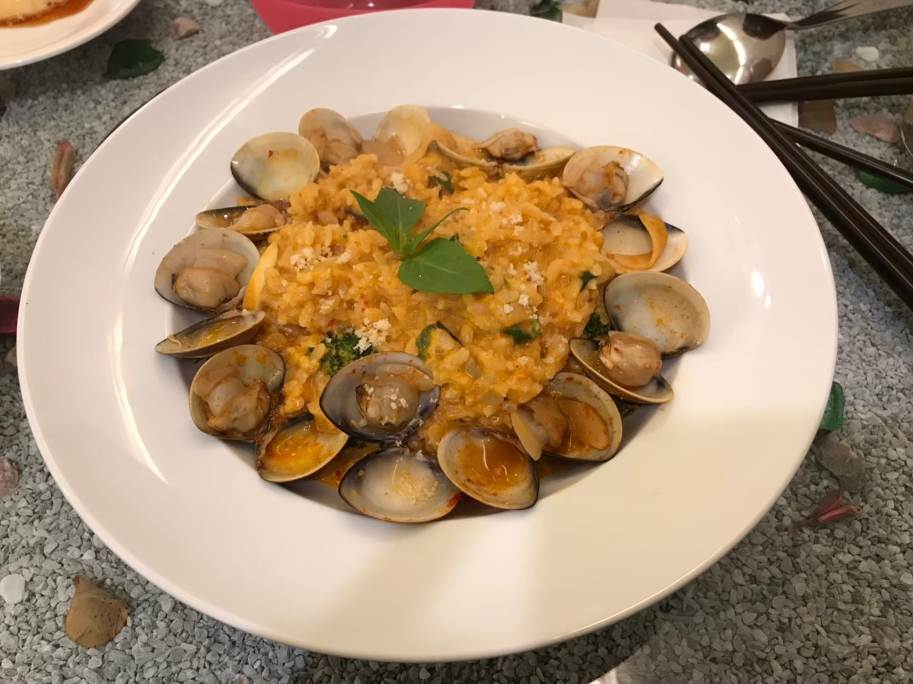
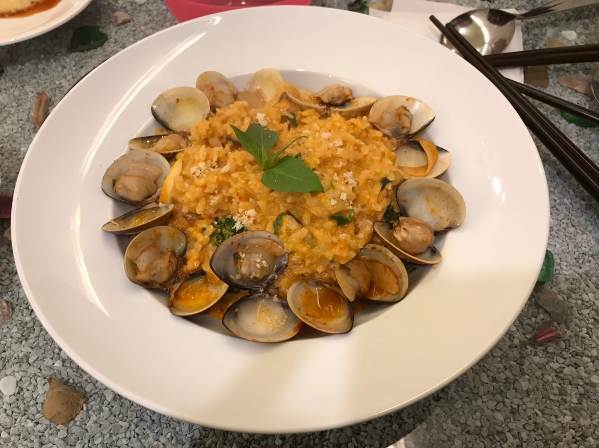
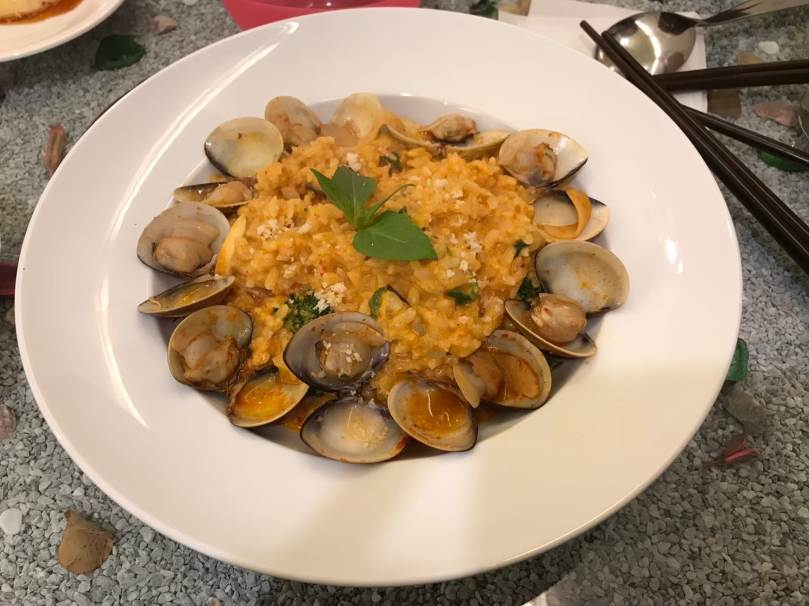

中原的美食太多，每天都好煩惱

yoyo複合式餐飲

在他還沒換招牌之前，根本沒有想進去的衝動，甚至他換了招牌我還以為是新開的店呢！ 這間店是網美可以來拍照的店，店裡的每個傢俱都很精緻，桌子內還有海沙跟貝殼，椅子很像公主椅，一到店內還以為是咖啡廳呢！ 餐點豐富好吃，套餐附的飲料也不馬虎，可以調整甜度也超級無敵大杯，炒飯跟燉飯都很不錯，打卡送的焦糖布丁也在水準之上， 價錢也不會太貴，很適合想聊天又想吃飽又想久坐的學生喔，整體CP值UPUP！(๑´ڡ`๑)
推薦指數：⭐⭐⭐⭐⭐ cp值：⭐⭐⭐⭐⭐ 營業時間：11:00~21:00